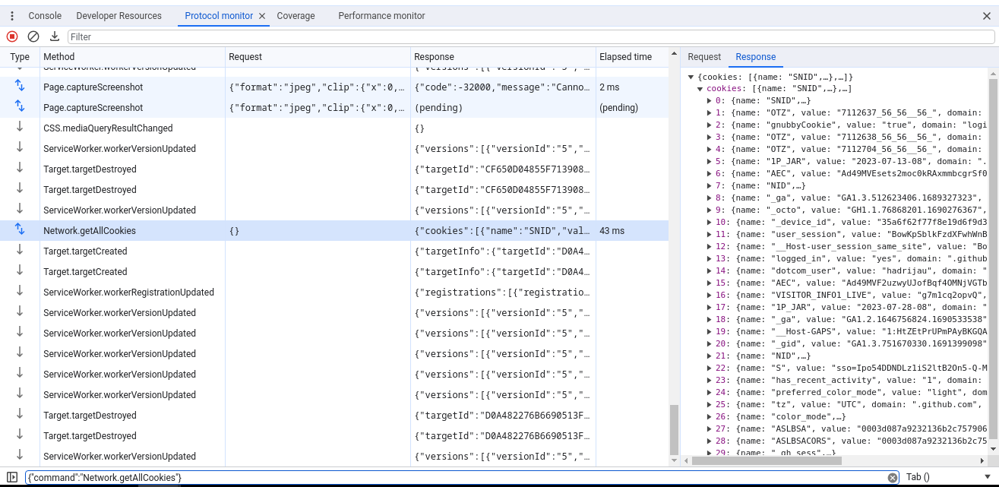
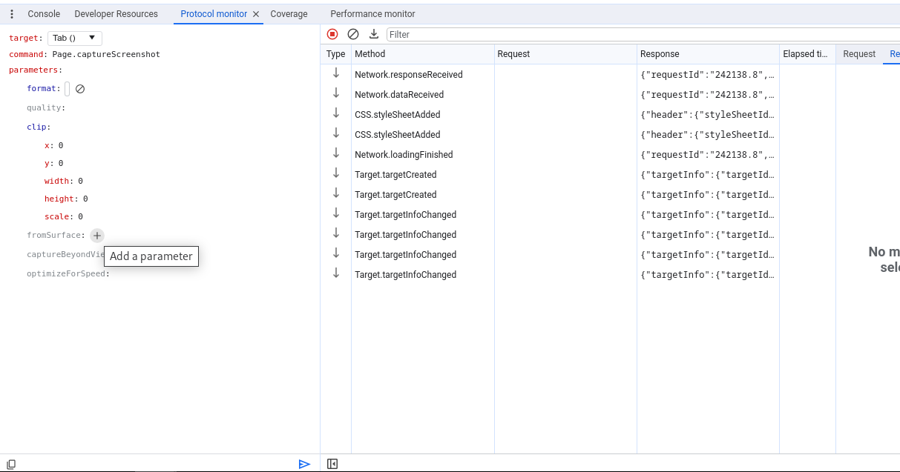

/
The Chrome DevTools Protocol allows for tools to instrument, inspect, debug and profile Chromium, Chrome and other Blink-based browsers. Many existing projects currently use the protocol. The Chrome DevTools uses this protocol and the team maintains its API.
Instrumentation is divided into a number of domains (DOM, Debugger, Network, etc.). Each domain defines a number of commands it supports and events it generates. Both commands and events are serialized JSON objects of a fixed structure.
The latest (tip-of-tree) protocol (tot) — It changes frequently and can break at any time. However it captures the full capabilities of the Protocol, whereas the stable release is a subset. There is no backwards compatibility support guaranteed.
v8-inspector protocol (v8) — Enables debugging & profiling of Node.js apps.
stable 1.3 protocol (stable) — The stable release of the protocol, tagged at Chrome 64. It includes a smaller subset of the complete protocol compatibilities.
See Getting Started with CDP. The awesome-chrome-devtools page links to many of the tools in the protocol ecosystem, including protocol API libraries in JavaScript, TypeScript, Python, Java, and Go.
Consider subscribing to the chrome-debugging-protocol mailing list.
This is especially handy to understand how the DevTools frontend makes use of the protocol. You can view all requests/responses and methods as they happen in the Protocol Monitor panel in DevTools.

Click the gear icon in the top-right of the DevTools to open the Settings panel. Select Experiments on the left of settings. Turn on "Protocol Monitor", then close and reopen DevTools. Now click the ⋮ menu icon, choose More Tools and then select Protocol monitor.
You can also send commands using Protocol Monitor. If the command does not require any
parameters, type the command into the prompt at the bottom of the Protocol Monitor panel
and press Enter, for example, Page.captureScreenshot. If the command requires
parameters, provide them as JSON, for example,
{"cmd":"Page.captureScreenshot","args":{"format": "jpeg"}}.
By clicking on the icon next to the command input (in Chrome 117+), you can open the
command editor. After you select a CDP command, the editor creates a structured form based
on the protocol definitions that allows you to edit parameters, and view their
documentation and types. Send the commands by clicking on the send button or using
Ctrl + Enter. Use the context menu in the list of previously sent commands to
open one of them in the editor.

Alternatively, you can execute commands from the DevTools console. First,
open devtools-on-devtools, then
within the inner DevTools window, use Main.MainImpl.sendOverProtocol() in the
console:
let Main = await import('./devtools-frontend/front_end/entrypoints/main/main.js'); // or './entrypoints/main/main.js' or './main/main.js' depending on the browser version
await Main.MainImpl.sendOverProtocol('Emulation.setDeviceMetricsOverride', {
mobile: true,
width: 412,
height: 732,
deviceScaleFactor: 2.625,
});
const data = await Main.MainImpl.sendOverProtocol("Page.captureScreenshot");
To allow chrome extensions to interact with the protocol, we introduced chrome.debugger extension API that exposes this JSON message transport interface. As a result, you can not only attach to the remotely running Chrome instance, but also instrument it from its own extension.
Chrome Debugger Extension API provides a higher level API where command domain, name and
body are provided explicitly in the sendCommand call. This API hides request
ids and handles binding of the request with its response, hence allowing
sendCommand to report result in the callback function call. One can also use
this API in combination with the other Extension APIs.
If you are developing a Web-based IDE, you should implement an extension that exposes debugging capabilities to your page and your IDE will be able to open pages with the target application, set breakpoints there, evaluate expressions in console, live edit JavaScript and CSS, display live DOM, network interaction and any other aspect that Developer Tools is instrumenting today.
Opening embedded Developer Tools will terminate the remote connection and thus detach the extension.
The canonical protocol definitions live in the Chromium source tree: (browser_protocol.pdl and js_protocol.pdl). They are maintained manually by the DevTools engineering team. The declarative protocol definitions are used across tools; for instance, a binding layer is created within Chromium for the Chrome DevTools to interact with, and separately bindings generated for Chrome Headless’s C++ interface.
These canonical .pdl files are mirrored on GitHub in the devtools-protocol repo where JSON versions, TypeScript definitions and closure typedefs are generated. It's published regularly to NPM.
Also, if you've set --remote-debugging-port=9222 with Chrome, the complete
protocol version it speaks is available at localhost:9222/json/protocol.
The endpoint is exposed as webSocketDebuggerUrl in
/json/version. Note the browser in the URL, rather than
page. If Chrome was launched with --remote-debugging-port=0 and
chose an open port, the browser endpoint is written to both stderr and the
DevToolsActivePort file in browser profile folder.
Chrome 63 introduced support for multiple clients. See this article for details.
Upon disconnection, the outgoing client will receive a detached event. For
example:
{"method":"Inspector.detached","params":{"reason":"replaced_with_devtools"}}.
After disconnection, some apps have chosen to pause their state and offer a reconnect
button.
If started with a remote-debugging-port, these HTTP endpoints are available on the same port.
/json/versionBrowser version metadata
{
"Browser": "Chrome/124.0.6367.60",
"Protocol-Version": "1.3",
"User-Agent": "Mozilla/5.0 ...",
"V8-Version": "12.4.254.12",
"WebKit-Version": "537.36 ...",
"webSocketDebuggerUrl": "ws://localhost:9222/devtools/browser/..."
}
/json or /json/listA list of all available websocket targets.
[ {
"description": "",
"devtoolsFrontendUrl": "/devtools/inspector.html?ws=localhost:9222/devtools/page/...",
"id": "...",
"title": "...",
"type": "page",
"url": "https://...",
"webSocketDebuggerUrl": "ws://localhost:9222/devtools/page/..."
} ]
/json/protocol/The current devtools protocol, as JSON.
/json/new?{url}Opens a new tab. Responds with the websocket target data for the new tab.
/json/activate/{targetId}Brings a page into the foreground (activate a tab).
/json/close/{targetId}Closes the target page identified by targetId.
/devtools/page/{targetId}
The WebSocket endpoint for the protocol.